Introduction
The finite eleme nt modeling of rigid pavement structures has become more important in recent years due to
the high
technological progress since it allows us to know more accurately the real behavior of a road structure
under loading
conditions and environmental effects [1]. This method is based on the numerical analysis for the
determination
of stresses and deflections utilizing the discretization of the element connected through nodes and arcs,
where the
accuracy of the results is directly proportional to the size of the mesh with which it works; that is, the
smaller the
discretization or division of the element, the more accurate the results will be.
EverFe is one of the software based on three-dimensional finite element models, developing its usefulness in
the
field of study and design of rigid pavements because it guarantees a more accurate approach in obtaining
results of
stresses and deflections in slabs [2], offering a wide range of analysis scenarios where you can take into
account the
longitudinal and transverse segments, joints, load spectra and modeling of one or more slabs [3]; making it
a more
practical and complete method concerning analytical methodology software.
Through EverFe 2.26, a rigid pavement structure is modeled corresponding to an urban road with hydraulic
concrete
slabs, sub-base support layer following INVIAS guidelines and subgrade. This structure is subjected to loads
generated
by vehicles and external factors of temperature changes that allow us to see the behavior of the structure
against
factors that cause stresses and deflections in the slabs. For this, two scenarios are applied: 1) Modeling a
slab with
a support layer and 2) Modeling a group of slabs where the presence of voussoirs and tie bars are present,
looking
together at the indispensable function that this type of reinforcement has in the pavement; since these
elements are
responsible for the load transmission and durability of the joint system, directly influencing the
performance of rigid
pavement, where if the transmission is inadequate, the slabs would be affected since the load capacity is
reduced,
directly causing structural damage to the pavement.
By determining the factors that influence the behavior of the structure, it is intended to have a basic
knowledge
about the design procedure of rigid pavement, demonstrating whether the structure is suitable or not for the
Ndesign
calculated in the traffic study. In this way, it is shown in a summarized and concrete way the optimal
methodology at
the time of defining each one of the efforts and deformations, the treatment of the obtained information,
the correct
check of the slabs by criteria given by AASHTO and INVIAS, and the analysis of results; all applied to a
real structure
using the finite element modeling.
Materials and Methods
Analysis of the finite element method
As technology advances, this method has become more useful in the modeling of rigid pavement structures
because it
can accurately represent the field conditions of traffic loading and weathering. It is a method that is
highly dependent
on the mesh size or number of element divisions and boundary conditions. Previous research has defined that
the
optimum number of divisions should be 16*16*2 [4] [5]; however, this criterion is not universal since other
studies
have established a division of 32*32*3 according to the dimensions of the slab [3]. It should be noted that
the mesh
used in this modeling is of equal size in each layer of the pavement structure, in addition to greatly
affecting the
accuracy of the results, i.e., having a smaller mesh the results will be more accurate. However, if the mesh
is too small
it leads to more time and computational work [3], so, for this article, several modeling was performed by
varying the
mesh width between 16 to 32, establishing that, to have good accuracy of the information in a short modeling
time
and low memory capacity, the meshing of 24*24 in the (x-y) plane and a subdivision in the z-plane of 3
elements is
applied.
To have an overview of the meshing work, it is taken into account that the geometry of the model is
rectangular, where
EverFE handles a 20-node cube with rectilinear meshes for the upper layers and an 8-node rectangle for the
subgrade
as shown in Figure 1.
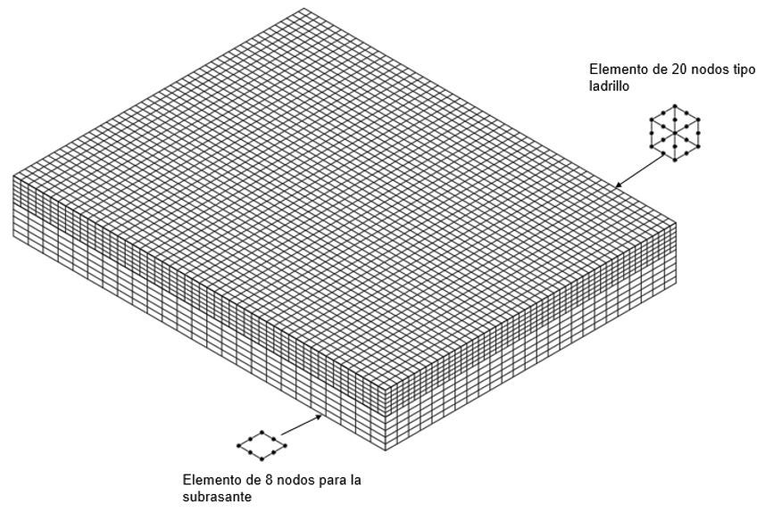
Figure 1. EverFe framing
The finite elements use constitutive models (elastic, plastic, elastoplastic, viscoelastic, etc.) to
determine the stresses,
deformations, and deflections in a micromechanical way; that is to say, at a global level in fine, granular
treated, and
untreated materials. In the static analysis, the material properties must be taken into account, which is
expressed in a
stiffness matrix (K) and column vectors of displacements or unknowns (u') and external forces (F') that
intervene in
the problem domain. See equation 1.
[K]{u'} = {F'} (1)
The implementation of this method is very useful since it generates color diagrams that offer a broader view
of the
stresses and deflections of the slab at the points of interest such as edge, corner, and interior of the
slab, which can be
divided according to their cause into transit, warping and friction stresses [6][7][7][8][9].
Analysis of the empirical-mechanistic method
This method was developed by Westergaard (1948) which considers a free slab applying a single wheel load
with a
circular contact area to determine the stresses and deflections at critical points of interest such as
edges, corners, and
interior of the slab. For each point of interest, there is a particular equation that allows knowing the
stress states of
the structure at the mentioned points; likewise, this method has the limitation that these results can only
be known at
a specific point, unlike the finite element method, which offers a global view of the behavior of the
structure against
external loads and the action of the weather. [10][11] [12].
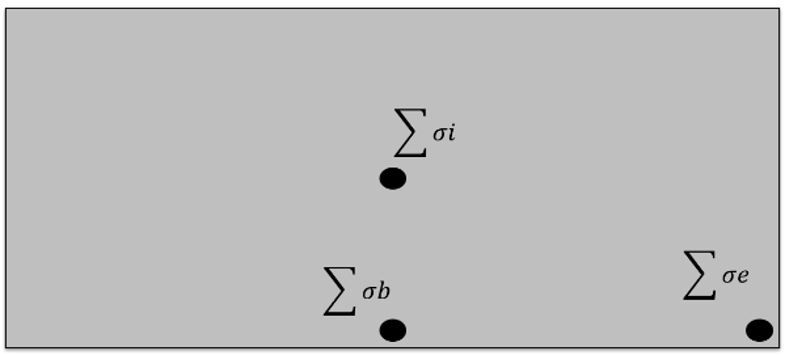
Figure 2. Study points for slab stresses.
The sum of stresses at each of the critical points can be broken down in equations 2, 3 and 4 as follows:
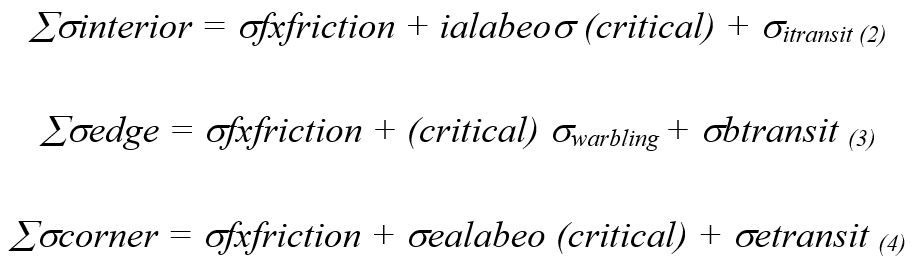
For the determination of the stress states of the structure, the EverFe 2.26 program was used.
Characterization of axles
The traffic study is an indispensable requirement when designing a pavement structure, since it projects and
determines
the number of 8.2 ton equivalent axles that will pass through the roadway, constituting the -Ndesign,
defining by
classification, the traffic level with which the thickness of the slab is calculated using the INVIAS
methodology [13].
For this article, the structure is analyzed with real data from the traffic study provided by the Mayor's
Office of
Motavita-Boyacá, where for the paving project of 4th Street in hydraulic concrete, it shows average daily
traffic -
TPD of 656 vehicles. Following the INVIAS procedure [13], the design traffic-Ndesign corresponding to NT2 is
calculated, where 8% belongs to commercial vehicles up to the classification of 3S3 (design vehicle).
The number of tires and weight per axle for the design vehicle is determined according to the current
resolution 4100
of 2004, which regulates the type of vehicles, dimensions, maximum gross weight, and axle type of motor
vehicles
for land transport [14], as shown in Table I.
Table I. Axles and Weight Per Axle for 3s3 Truck.
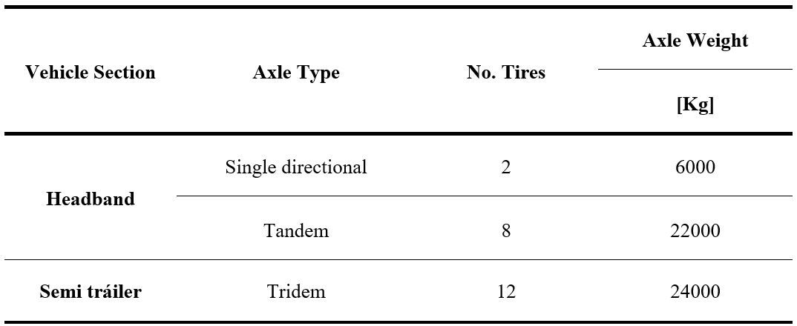
Source: Authors. Taken and Edited from the Ministry of Transport. Resolution 4100 of 2004.
Colombia.
For its respective modeling, Figure 3 shows a planning scheme where the information is given in Table I is
graphically
represented, where the separation of the axles in the X and Y direction is taken into account. To get
results closer to
reality, measurements of axle spacing and tire width are taken to determine the geometry of the load plate
or contact
area of each of the axles. In this way, it is possible to model them individually using the load spectrum
methodology
to determine the damage caused in the slab.
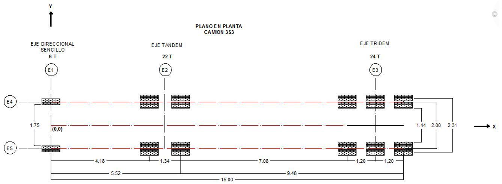
Figure 3.3S3 truck layout.
Load footprint
For the modeling of axles, EverFe requires the definition of the geometry of the contact area between square
and
rectangular to consider each tire separately; in this way, the axle weight is distributed by the number of
tires that
compose it to know the load per tire that will be transmitted directly to the concrete slab. For the case
study, a
rectangular footprint is assumed and its dimensions are shown in Table II.
Table II. Contact Area By Shaft Type.
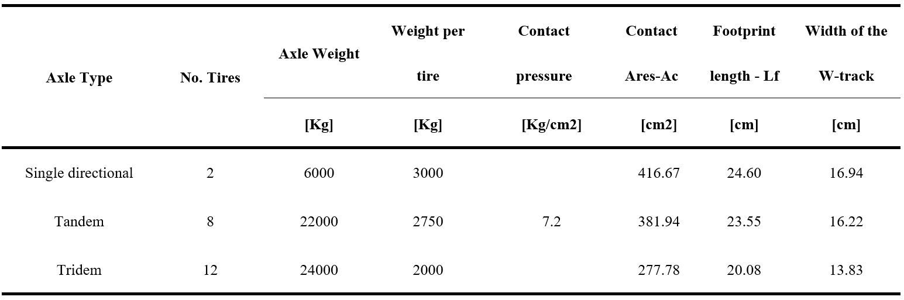
Structural Model
The pavement structure to be modeled is obtained with the INVIAS methodology [13] from the following design
parameters:
- Subgrade CBR of 5.5%, subgrade categorization S3.
- Granular sub-base layer according to the specifications of Article 320 of the INVIAS-2013 with a
thickness of 25
cm class B.
- Hydraulic concrete slab with a modulus of rupture of 40 kg/cm2
.
- Ndiseño NT2 that a hydraulic concrete slab thickness of 21 cm with dimensions 320 cm wide and 250 cm
long is
obtained.
- Temperature gradient - ∆T. It indicates the temperature difference that the slab undergoes due to
climatic changes
causing differential contractions or movements throughout the slab [15].
- Modulus of reaction of the whole - Kefective. This is a determining factor in the design of a rigid
pavement because
it encompasses the reaction of the layers underlying the slab, including the subgrade. It is known that
the slab cannot
be placed directly on the foundation soil, due to several properties that affect it, so it requires
overcoming this problem
by utilizing the proportion of layers between the subgrade and the slab so that the stresses generated
by traffic can be
received and transmitted to the subgrade in a smaller proportion [4].
- Load transfer system with 11/8 inch diameter [2.86 cm] voussoirs, 40 cm long and 30 cm apart, and with ½
inch
diameter [1.27 cm] tie bars, 60 cm long and 100 cm apart.
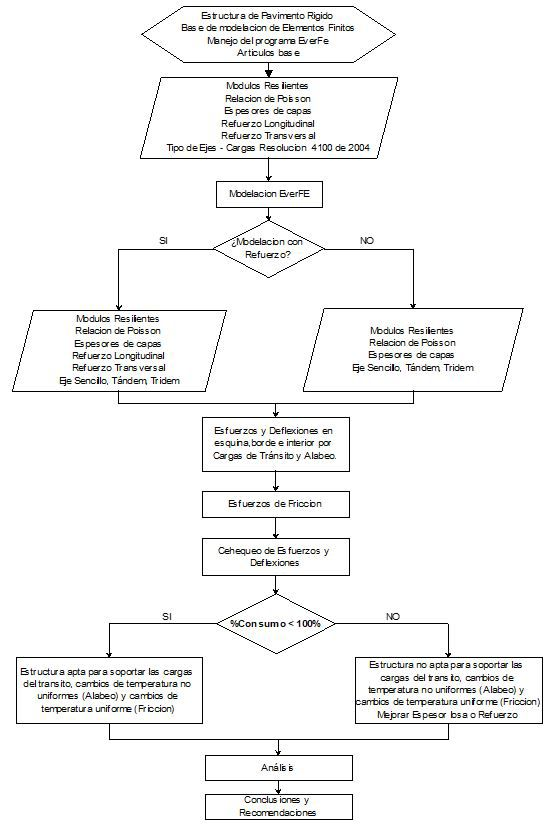
Figure 4. shows the Flow Chart that summarizes the methodology used in this research.
Results and Analysis
When modeling the rigid pavement structure, the points to be evaluated (interior, edge, and corner) of the
slab are
defined by determining stresses in the X-Y direction and deflections at each of the analysis points. These
results are
defined by axis type in Table III.
Table III.Stresses and Deflections are Generated by the Type Of Shaft
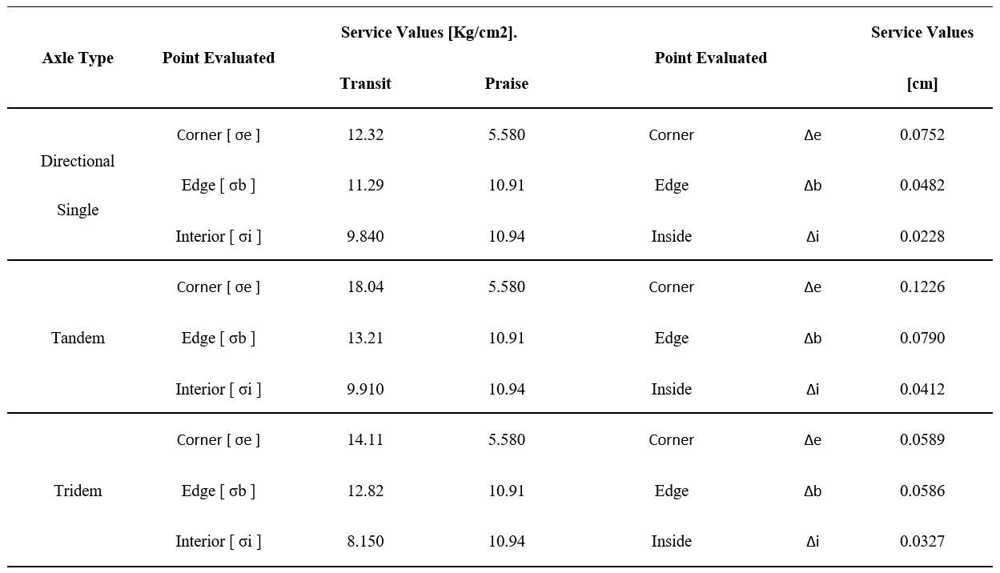
In addition to this, the frictional forces generated by uniform temperature changes (σf) must be determined.
This is
determined by equation 5:
σf=0.18*L [Kg/cm2] (5)
Where:
L = Length of the slab [m].
The calculated value is 0.45 Kg/cm2
, which is the same for all the evaluated points and for each type of modeled axis
since it is only a function of the length of the slab.
With σf calculated, a check of the corner, interior, and edge stresses are performed using equations
2, 3,
and 4,
verifying that it complies with the design criteria. In the same way, a deflection check is performed where
none of the
obtained deflections is greater than 0.15 cm being this the maximum value for the failure of the concrete.
Table IV. Effort Check.
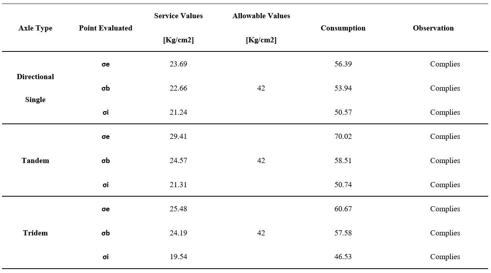
Table V. Deflection Check.
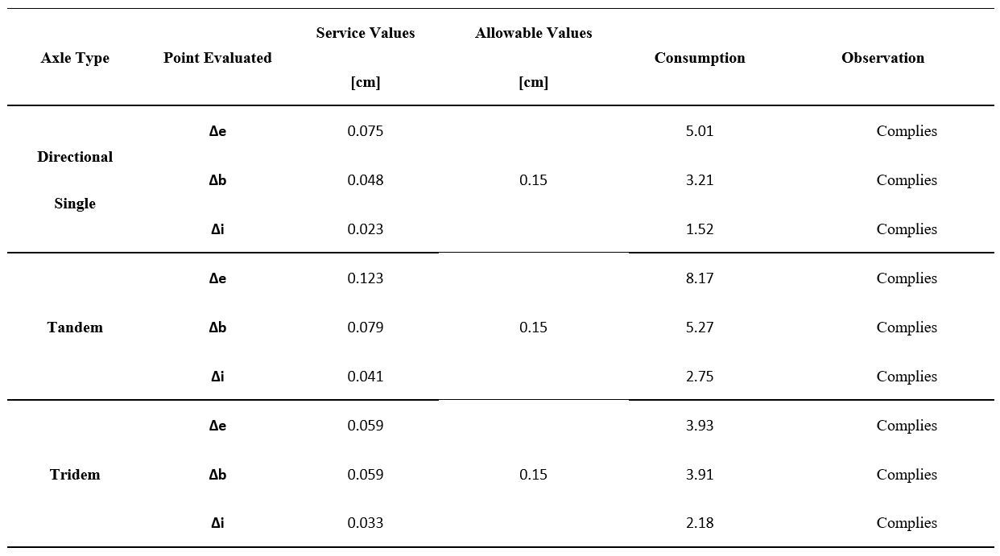
In the same way, the forces and deflections for the slab are determined considering the segments and tie
bars, as shown
in Table VI.
Table VI. Stress and Deflection Check of Slabs With Voussoirs and Tie Bars

As can be seen in Tables IV, V, and VI, two types of modeling were carried out. In the first one, a slab
without
segments or tie bars was considered and in the second one, the set of slabs with their respective segments
and tie
bars were considered; to which the stresses and deflections produced by traffic loads, warping, and friction
were
determined. According to the above, it is observed in the first modeling that the service values of the
structure are
lower than the admissible ones, having a maximum consumption percentage of 70% for the stresses and 81.73%
for
the deflections. Both values were produced by the tandem axis and were located at the corner of the slab.
The stresses
of the tridem axis were below the stress states produced by the tandem axis due to the dimensions of the
slab, since it
was not possible to locate the 3 axes within the same element, forcing to place the load only of the first 2
axes at the
points of interest.
In the second modeling, it was observed that the service values of the structure, considering the load
transfer and
tie bars, are lower than the admissible ones, obtaining a maximum consumption value of 97.75% for the forces
and
23.93% for the deflections. Unlike the first model, these percentages were obtained in different points, the
maximum
stresses were located in the corner of the most loaded slab and the deflections in the interior of the slab
where both
values were produced by the tandem axis.
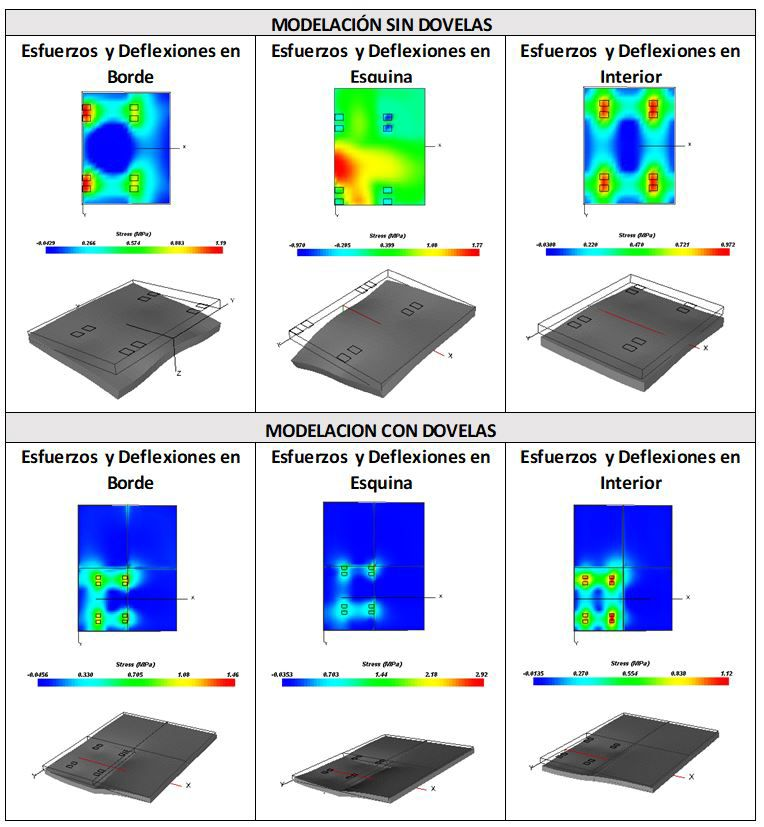
Figure 5. Tandem axle stresses and deflections - scenario 1 and 2
In the two modeled scenarios, it could be observed that the tandem axis causes the highest stresses and
deflections as
shown in Figure V, which were located at the corner and inside the slab. It should be noted that in the
second modeling
the maximum deflection was obtained in the interior of the slab, which is improbable because at this point
there is an
adequate distribution of forces and deflections, deducing that the result is a consequence of the
incorporation of the
voussoirs and tie bars, which are responsible for transmitting the deflections to the attached slabs where
the magnitude
is greatly reduced at the edge and corner points. This decrease corresponds to 71.86% at the corner, 55.06%
at the
edge, and 12.86% inside the slab. In the second scenario, the stresses increased 28.35% at the edge, 6 % at
the corner,
and 9.30 % at the interior for the loaded slab and parallel to it.
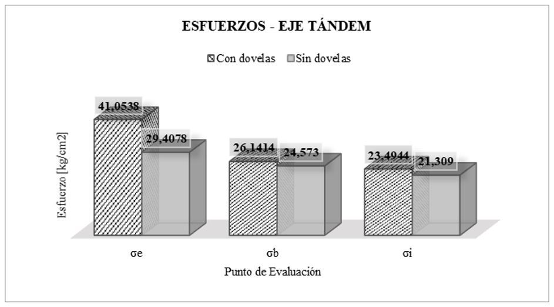
Graph 1. Tandem axis forces for two scenarios.
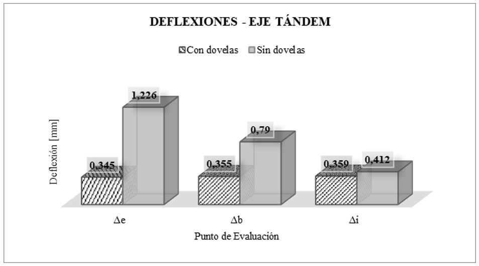
Graph 2. . Tandem axis deflections for two scenarios.
As can be seen in graph I, the stresses increase when the structure is modeled with segments, allowing to
see the
effective load transfer that this system generates in the slabs causing that the load-bearing work is done
by the whole
and not individually, observing that the most affected point is the corner having the highest magnitude of
stresses.
If the change in magnitude of the deflections in the two scenarios is analyzed, graph II shows that the load
transmitting
elements considerably benefit the slabs, since they allow them to suffer less in terms of deformations due
to the
improvement of stress transfer, allowing the prevention of premature failure caused by traffic loads. As a
complement,
the segments and tie bars help to effectively and durably contain the movements of the element caused by
non-uniform
temperature changes, i.e. warping stresses.
These stresses are the ones that are most present in the slabs since even without a vehicle passing over it,
it is already
working alone due to the action of the thermal gradient (ΔT) that generates high temperature in the upper
part of the
slab and low in the lower part and vice versa, taking a concave or convex shape, a disposition that
generates additional
major stresses.
Conclusions
When designing a rigid pavement, the procedure for obtaining input data must be carried out with caution,
since it is
these data that determine whether or not the structure complies with the calculated N design.
It is important to see that the contact area is one of the most representative factors when modeling in
EverFe since it
represents how the load can be transferred from the shafts to the slabs.
The finite element modeling allows obtaining results closer to reality, as it is reflected in the increase
of the magnitude
determined by EverFe in comparison with the manual analytical methods. This increase becomes a "safety
factor"
which, if it is not foreseen in the design process of the structure in the phase of checking the slabs, will
cause an early
failure of the slabs because the stresses caused by the level of traffic will be higher than estimated.
Deflexiones, Dovelas, Elementos Finitos, Esfuerzos, EverFe, Losas de concreto, Pavimento rígido.The
three-dimensional analysis provided by EverFe allows for better visualization of the stresses and
deflections
generated in the slab. For this visualization to be more in line with reality, it requires that the results
obtained are more
accurate and in the need to optimize the collection of information, meshing plays a very important role.
Making a
relation of previous research on the modeling in this type of software, the division of the layers should be
between 16
and 32 with an optimum of 24 in x - y, and 3 in z; since it is verified that the modeling of 24 onwards, the
results of
efforts and deflections become similar with the low difference between them because it is not justified to
model with 32 divisions that demand more time and computational capacity if the same results will be
obtained if it is modeled
with 24 divisions.
It was found that the finite element modeling, allows to adequately represent the behavior of the segments
and tie bars
since the largest decrease was detected in the deflections with a reduction of about 71%. It shows that this
load transfer
system is very effective in helping the slab to adequately support the traffic loads.
By analyzing the stresses and deflections at the points of interest (corner, interior, and edge), it could
be deduced
that the section of the slab that suffers most from warping and traffic load effects is the corner.
Therefore, this point
is critical when mentioning the structural failures of the slabs since it is the most susceptible to
stresses; causing this
to be the initial point for failure, generating corner cracks, which is one of the most common pathologies
in rigid
pavements.
When the set of slabs was considered, the stress due to traffic load increased in all the evaluation points
and in a more
significant way in the corner showing the real behavior of the pavement; demonstrating that it is one of the
most
critical points, but less studied, so it is necessary to carry out more detailed investigations to explain
this phenomenon.
As the serviceability values in the two scenarios were less than the permissible values, it can be said that
the structure
will perform adequately and will adequately support the number of load repetitions during its entire service
life. To
have a more realistic idea of the behavior of the pavement structure, the serviceability values of the
second scenario
should be taken into account since this is the way the structure will be built and operated during its
service life
Acknowledgements
The authors would like to thank the School of Transportation and Roads of the Faculty of Engineering of the
Pedagogical and Technological University of Colombia for the support provided for this research.
References
[1] Shaban, A., Alsabbagh, A., Wtaife, S., & Suksawang, N. (2020). Effect of Pavement Foundation Materials
on Rigid Pavement Response. IOP Conference Series: Materials Science and Engineering, 671, 012085.
[2] Šešlija, M., Radović, N., & Togo, I. (2016). A FEM Modeling of the Concrete Pavement Made of the
Recycling Material. MATEC Web of Conferences, 73, 04003.
[3] M.G, G., Agarwal, A., Kumar, R., & Choubey, N. (2012). Analysis of rigid pavement using Everfe.
National Conference On Contemporary Civil Engineering, 1313-1321.
[4] Meshram, K., Goliya, H.S., & Poddar, A., (2013). Stress analysis and determination of effective k-value
for rigid pavement. International Journal of Engineering Science and Technology. Vol 5. Ed. 3, 468-473.
[5] Gu, H., Jiang, X., Li, Z., Yao, K., & Qiu, Y. (2019). Comparisons of Two Typical Specialized Finite
Element Programs for Mechanical Analysis of Cement Concrete Pavement. Mathematical Problems In
Engineering, 2019, 1-11. https://doi.org/10.1155/2019/9178626.
[6] Davids, William G., Zongmu Wang, George Turkiyyah, Joe P. Mahoney, and David Bush. (2003).
"Three-Dimensional Finite Element Analysis of Jointed Plain Concrete Pavement with Everfe2.2".
Transportation Research Record: Journal of The Transportation Research Board 1853 (1): 92-99.
[7] Jensen, E., & Hansen, W. (2006). Nonlinear aggregate interlock model for concrete pavements.
International Journal of Pavement Engineering, 7(4), 261-273.
[8] Kim, S., Ceylan, H., & Gopalakrishnan, K. (2014). Finite element modeling of environmental effects on
rigid pavement deformation. Frontiers of Structural and Civil Engineering, 8(2), 101-114.
[9] Daniel, C., & Chairuddin, F. (2017). Compare the Results Between Model Laboratory-test for Rigid
Pavement and EverStressFE Software Analysis. Procedia Engineering, 171, 1377-1383.
[10] Pallares, M., & Pulecio, J. (2017). Aplicabilidad del Método de los Elementos Finitos Análisis y
Dimensionamiento de Losas JCPC para Carreteras de Dos Carriles. ITECKNE. 14, 148-153. http://
dx.doi.org/10.15332/iteckne.v14i2.1769.
[11] Jeong, J., Park, J., Lim, J., & Kim, S. (2014). Testing and Modelling of Friction Charecteristics Between
Concreto Slab and Subbase Layers. Road Materials and Pavement Design, 2014. 114-130. http://dx.doi.
org/10.1080/14680629.2013.863161.
[12] Kim, S., Park, J., & Jeong, J. (2013). Effect of temperature-induced load on airport concrete pavement
behavior. KSCE Journal Of Civil Engineering, 18(1), 182-187. https://doi.org/10.1007/s12205-014-
0056-7.
[13] Londoño Naranjo, C., & Alvarez Pabón, J. (2008). Manual de Diseño de pavimentos de concreto: para
vías con bajos, medios y altos volúmenes de tránsito (p. 114). ICPC. http://invias.gov.co.
[14] Ministerio de transporte. (2004). Resolución 4100 (pp. 2-8). Bogotá: República de Colombia.
[15] Davids, W. (2001). 3D Finite Element Study on Load Transfer at Doweled Joints in Flat and Curled
Rigid Pavements. International Journal of Geomechanics, 1(3), 309-323.

 Magister en Ingeniería de Vías
Terrestres,
carlos.higuera@uptc.edu.co .
Magister en Ingeniería de Vías
Terrestres,
carlos.higuera@uptc.edu.co .  ORCID:
0000-0003-1333-2517.
Universidad Pedagógica y Tecnología, Colombia.
ORCID:
0000-0003-1333-2517.
Universidad Pedagógica y Tecnología, Colombia.